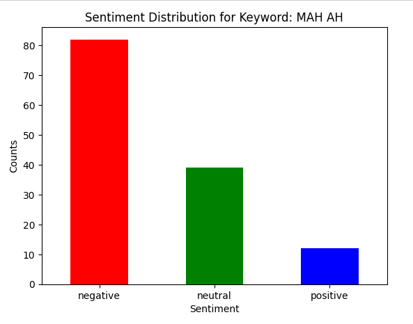

Намуудын талаарх жиргээнүүд?#
Twitter API ашиглан МАН АН гэсэн түлхүүр үгээр хайлт хийж тэрхүү датан дээр ChatGPT API ашиглан sentiment анализ хийв. LLModel нь өгүүлбэр тус бүрээр оноо өгөөд (-1, 1 хооронд) нийлбэрээр нь classification хийдэг болохоор монголоос англи хэлрүү орчуулсан текстэн дээр нилээд алдаж байна. Жишээ нь “АН байгаач МАН ялна” гэсэн жиргээг эерэг жиргээ гэхэд хэцүү юм. Гэхдээ нийт 136 жиргээг ерөнхийд нь үзвэл бас ч баримжаатай байна. Графикийн доор ашигласан пайтон код мөн хүмүүсийн жиргээнүүдийг хамгийн доод талд орууллаа. Бүрэн кодыг өмнөх постноос үзэж болно. Хамгийн хэцүү нь түлхүүр үг сонгох. Ганцхан МАН гэхээр манай мань мангас гэсэн үгтэй шал өөр өөр утгатай жиргээ татчихаад байгаа болохоор заавал МАН АН ХҮН гэж байж намуудын талаарх жиргээ орж ирж байна. Жишээ нь:
Сөрөг жиргээ#
Author: DoodleMN
Tweet: @Bayaraa0218 Цахим хувьсгал хийсэн Монголын Ерөнхий сайд бол Сайханбилэг ба АН-ын Засгийн газар! Данх Оюук улсын мөнгө хулгайлахаас өөр юу ч хийгээгүй! ТҮЦ машины лавлагаануудыг анх Сайханбилэг нэвтрүүлж, e-mongolia-г анх нэвтрүүлсэн! МАН мафи хулгайчид данх Оюук нүдээ цавчихгүй худад хэлдэг!
Sentiment: negative
Эерэг жиргээ#
Author: GantsUnen
Tweet: @budragchaaser Нямбаатар зоригтой шийдэмгий ажиллаж бна.МАН сонгоё доо.АН бол нялцагнаад хүний эрх гэж солиороод бүр таг зогсоож түгжирнэ!
Sentiment: positive
Neutral жиргээ#
Author: ard_mn
Tweet: @TomyoBodyo Аав, ээж, ах, дүүс гээд бүгд нэг атганд орж байна гэдэг сонин л юм. Би ээжтэй яриад ман, аавтай яриад ан байдаг, дал гарсан хөгшчүүл шүү.
Sentiment: neutral

Код болон жиргээ тус бүр дээр хэрхан таамаг хийснийг харна уу?#
from requests_oauthlib import OAuth1Session
import json
import pandas as pd
import datetime
import sqlite3
import time
from sqlalchemy import create_engine
import openai
import os
current_dir = os.getcwd()
chatgpt_cred = os.path.join(current_dir, "config.json")
log_file = os.path.join(current_dir, "script_log.txt")
cred_file = os.path.join(current_dir, "twitter_credentials.json")
db_path = os.path.join(current_dir, "tweets.sqlite")
output_file = os.path.join(current_dir, "new.csv")
daily = os.path.join(current_dir, "daily_tweets_from_ai.csv")
image_input_file = os.path.join(current_dir, "canva.png")
image_output_file = os.path.join(current_dir, "post.jpg")
engine = create_engine(f'sqlite:///{db_path}')
now = datetime.datetime.now()
now.strftime('%Y-%m-%d-%H-%M')
# Load the API key from a JSON file
with open(chatgpt_cred , 'r') as file:
config = json.load(file)
api_key = config['openai_api_key']
openai.api_key = str(api_key)
Functions#
sql_query = '''
WITH RankedTweets AS (
SELECT
author_id,
tweet_id,
text,
created_at,
username,
sentiment,
ROW_NUMBER() OVER (PARTITION BY author_id ORDER BY created_at) as rank
FROM mongol
)
SELECT
author_id,
tweet_id,
text,
created_at,
username,
sentiment
FROM RankedTweets
WHERE rank = 1
'''
df= pd.read_sql_query(sql_query, engine)
# Assuming df is your DataFrame
end = df.shape[0]
print(f"Total tweets: {end}")
df
Total tweets: 133
| author_id | tweet_id | text | created_at | username | sentiment | |
|---|---|---|---|---|---|---|
| 0 | 100446141 | 1757967578096644553 | @TomyoBodyo Аав, ээж, ах, дүүс гээд бүгд нэг а... | 2024-02-15T03:18:26.000Z | ard_mn | neutral |
| 1 | 1039086266 | 1756337033034043716 | @batdorj911 @Chuluunbat201 @Temuujin_Kh @Uyang... | 2024-02-10T15:19:14.000Z | ebomandakh | neutral |
| 2 | 105260958 | 1754916419731415324 | @khbobunaguai Амаргүй гэж үг бхгүй Хэцүү гдг ү... | 2024-02-06T17:14:13.000Z | BeKool55 | negative |
| 3 | 1087693168437415937 | 1757782161812525364 | @khotgoid81 Орос нохой Женкогын АН аа дэмжинэ\... | 2024-02-14T15:01:40.000Z | OCHIROO51970872 | negative |
| 4 | 1087771890 | 1757632914274288055 | С.Эрдэнэ: АН-ын ялагдлыг "Женко" МАН-тай хамта... | 2024-02-14T05:08:36.000Z | Dorgiomn | negative |
| ... | ... | ... | ... | ... | ... | ... |
| 128 | 967914257202335744 | 1757740077231575467 | @Uyanga_ts АН-н гайгүй гэсэн болгоныг МАН-гару... | 2024-02-14T12:14:26.000Z | tserendash_1 | negative |
| 129 | 97402990 | 1757618611080855798 | С.Эрдэнэ: АН-ын ялагдлыг "Женко" МАН-тай хамта... | 2024-02-14T04:11:46.000Z | sonin_mn | negative |
| 130 | 983001520051335168 | 1756359514369212835 | МАН-ын ЕНБД Амарбаясгалан андын зурж буй зураг... | 2024-02-10T16:48:34.000Z | OtgooJadamba | negative |
| 131 | 985889737 | 1757704133941907637 | С.Эрдэнэ: АН-ын ялагдлыг "Женко" МАН-тай хамта... | 2024-02-14T09:51:36.000Z | A_Erdenepurev | negative |
| 132 | 99342993 | 1756507315132567767 | @Laperleperle @haku_8118 Жэнког мэдээж дэмждэг... | 2024-02-11T02:35:52.000Z | OChuluunbileg | neutral |
133 rows × 6 columns
import pandas as pd
import matplotlib.pyplot as plt
keyword = "МАН АН"
def plot_sentiment_bar_chart(df, sentiment_column):
"""
Plots a bar chart of sentiment distribution.
Parameters:
df (pandas.DataFrame): DataFrame containing the sentiment data.
sentiment_column (str): The name of the column in df that contains sentiment values.
"""
# Count the occurrences of each sentiment
sentiment_counts = df[sentiment_column].value_counts()
# Plotting
sentiment_counts.plot(kind='bar', color=['red', 'green', 'blue'])
plt.title(f'Sentiment Distribution for Keyword: {keyword}')
plt.xlabel('Sentiment')
plt.ylabel('Counts')
plt.xticks(rotation=0) # Rotate x-labels for better readability
plt.show()
plot_sentiment_bar_chart(df, 'sentiment')
def printInColor(df):
# ANSI escape codes for some colors
RED = '\033[31m' # Red Text
GREEN = '\033[32m' # Green Text
BLUE = '\033[34m' # Blue Text
RESET = '\033[0m' # Reset to default color
for i in range(0, df.shape[0]):
# if df.sentiment[i] =='positive':
print(f'''
- {GREEN}Author{RESET}: {df.username[i]}
- {BLUE}Tweet{RESET}: {df.text[i]}
- {RED}Sentiment{RESET}: {df.sentiment[i]}
---
''')
printInColor(df)
- Author: ard_mn
- Tweet: @TomyoBodyo Аав, ээж, ах, дүүс гээд бүгд нэг атганд орж байна гэдэг сонин л юм. Би ээжтэй яриад ман, аавтай яриад ан байдаг, дал гарсан хөгшчүүл шүү.
- Sentiment: neutral
---
- Author: ebomandakh
- Tweet: @batdorj911 @Chuluunbat201 @Temuujin_Kh @Uyanga_ts @erintulgatmn @Enkhsaikhan_PM @E_BatUul 1т жонхуу гэдэг нь намын гишүүнчлэлээ сэргээцийм уу? АН олонхийн саналаа дагдаг болохоос МАН, ХҮН шиг нэг нь шийдээд шийдвэрийг нь дагаад явчдаггүй байх оо, өнөөдрийн МАН хамгийн их эрх мэдэлтэй ерөнхий сайд бий болгоход гардан туслагч нь ХҮН биздээ
- Sentiment: neutral
---
- Author: BeKool55
- Tweet: @khbobunaguai Амаргүй гэж үг бхгүй Хэцүү гдг үг бий. Улстөрчдийн усан толгойноос гарсан мангар үг. Hard гхийн оронд not easy гхтэй адил. Амаргүй ажил гэж бхгүй гхээр хэцүү ажил гэж бхгүй гсн утга илэрхийлэнэ. Амар ажил бхгүй л гэх бх.
- Sentiment: negative
---
- Author: OCHIROO51970872
- Tweet: @khotgoid81 Орос нохой Женкогын АН аа дэмжинэ
Харин өөрдсийнх хайртай Өрнөдийн ардчилсан тэргүүнүүдэд үнэлэгдээд бгаа МАН ыг зайлуулна гээд бгаа шдээ
Слава нар зарчимгүй олон нүүртэй хог шаарууд
- Sentiment: negative
---
- Author: Dorgiomn
- Tweet: С.Эрдэнэ: АН-ын ялагдлыг "Женко" МАН-тай хамтарч зохион байгуулсан https://t.co/ppTL5XGvQF
- Sentiment: negative
---
- Author: BatbayarDonjoo
- Tweet: АН-ын саналыг зулгаахаар Үндэсний эвсэл бгуулагдана гэж хаа бхав, арай л дутуу бодож бна. Мэдээж танай намд багтахгүй хүмүүс тусдаа сонгуульд орж таарна, тэднийг АН-ын саналыг хагалах зорилготой гэж битгий бод. МАН, АН гэхээр хүн бусад нь хүн биш гэсэнтэй адил сонсогдож бна...🤨 https://t.co/92xx5GzOuH
- Sentiment: negative
---
- Author: Gerlee_smile
- Tweet: @EnkhboldZu Ман-д ч өгөхгүй АН-д ч өгөхгүй за
- Sentiment: neutral
---
- Author: aagiigerlee1
- Tweet: @A_Tamir_O @LutochirT Орос Украйн руу дайрахаар НАТО ялгаагүй гэх юм. НАТО хамаагүй баймаар. МАН болохгүй байна гэхээр АН ч ялгаагүй гэдэгтэй адил юм даа.
- Sentiment: neutral
---
- Author: Bayar_2017
- Tweet: @Gumpaa @BaatarUB Хамаг том авилгалчид, албан тушаалын гэмт хэрэгтнүүд нь ЕС-ын дэргэд, түүний ЗГ-ын бүрэлдэхүүнд байдаг байх оо. ЗГ-ын авилгалтай “тэмцэх” гол зарчим нь АН-ын гишүүдийг авилгалч гэж барьж хорих, мэдээж МАН доторхи ОЭ-ийг дэмжигч бус цөөн тооны нөхдийг золигт гаргах юм биш үү
- Sentiment: negative
---
- Author: liberty976
- Tweet: Монголд бараг МАНгар нь тэр чигтээ, харин АН-д жонхуу ба түүний ноход. Харин ХҮН-д яадгийн бол?! Манайх бол хөл толгойгүй бөөстчихсөн 🤣😂🤣😂😂 https://t.co/QJ4eCZSOsS
- Sentiment: neutral
---
- Author: ganbatt2
- Tweet: @bjargal9999 @elbegdorj Би их дэмждэг байсан Сүүлийн үед сонин санагддаг боллоо... АН МАН аас үл хамаарч монгол улс нэг л гадаад бодлоготой байх ёстой гэж боддог
- Sentiment: neutral
---
- Author: badral_m
- Tweet: @charleyjet @papaav_v8 АН нам МАН аас ялгаагүй болсон.
- Sentiment: negative
---
- Author: khadaa_n
- Tweet: #АН, #ХҮН намын цөөн хэдэн гишүүд нь #МАН-ын бодлого үйл/аж-г шүүмжилж буй болхс намууд нь ЗГ-ын бодлого үйл/аж-г шүүмжилж сөрөхгүй гсн амлалт авч "хаалтын гэрээ" хсн юм шиг таг..@gantumurLU ,@dorjkhand_t .⁉️.#АН #ХҮН 2 #МАН-ын баруун зүүн суганд нь бат хавчуулагдаа юу..🤮 https://t.co/nXGHhxqJGT
- Sentiment: negative
---
- Author: TsJagaa123
- Tweet: @Temuujin_Kh МАН ыг ямарч аргаар хамаагүй ялах л чухал Номт нэг хэсэг Хүн нөгөө хэсэн тэгээд АН бол 24 онд бахь байдгаараа байх болно
- Sentiment: negative
---
- Author: Turmunk57659933
- Tweet: @E_BatUul @undrakhaa За болиорой! Монголчууд маань манж, богдын үед ч, соц д нь ч байгаагаарай л ширээгээ засдаг байлаа. Тэр бүү хэл гэрээ зараад ч хийдэг байсан. Нэг л их шудрага нөхөр… үндэсний баярыг минь бүү улс төржүүл!!! МАН , АН та нар яг адилхан.
- Sentiment: neutral
---
- Author: Dashkyi
- Tweet: Түүтр урьдынх шиг ээ байхаа больж дээ.
Элдэв зургаа шахсан эвгүй хүүхнүүд (бодвол ямар нэг дутуугийн л илрэл бх)
ЭХ орноо худалдсан эргүү орк, их аядуу хятад тролл
МАН, АН хиамчид
Унших юм ховорджээ.
- Sentiment: negative
---
- Author: Ganzori99102791
- Tweet: Баавгай болохсон киног шүүмжлээ л биз ямар хиам идэж, бөгс долоож явсан биш гээд саймшраад байсан шитгүүлч эгч , намаа биш улсаа бодсон ЕС гээд хээв нэг МАНгар том хиам жавир2 гээд зажилж байдаг шүү..
- Sentiment: negative
---
- Author: bakichb
- Tweet: @OChuluunbileg монголчууд бүр их нүүрс зарсан ч авилга буурахгүй гдгн энэ сонгуулиар МАН ялна гсн үг.
авилга идэлт утгаа алдана энэ бол баталгаатай.
ман ялаад стандарт бус засаг байгуулж самрана дан ман ыхн иддэг бол засагтн орсон ан хүн номт энтр бүгд чадлаараа идэж авилга авдаг болно.
- Sentiment: negative
---
- Author: batdorj911
- Tweet: @Chuluunbat201 @Temuujin_Kh @Uyanga_ts @erintulgatmn @Enkhsaikhan_PM @E_BatUul МАН угаасаа оросын байгуулж өгсөн ном. АН Монголын үнэртэй нам. Орос нохой нэг л хэсэг. МАН бол бүхэлдээ оросын нохой нам
- Sentiment: negative
---
- Author: Bayar0911
- Tweet: Ганаа эгч яахав дээ. Бодох ч юм алга.
Харин АН зүг чигтэй хүн Оюукийг магтсанд бүр гайхав ш дээ.
- Sentiment: negative
---
- Author: DoodleMN
- Tweet: @Bayaraa0218 Цахим хувьсгал хийсэн Монголын Ерөнхий сайд бол Сайханбилэг ба АН-ын Засгийн газар! Данх Оюук улсын мөнгө хулгайлахаас өөр юу ч хийгээгүй! ТҮЦ машины лавлагаануудыг анх Сайханбилэг нэвтрүүлж, e-mongolia-г анх нэвтрүүлсэн! МАН мафи хулгайчид данх Оюук нүдээ цавчихгүй худад хэлдэг!
- Sentiment: negative
---
- Author: hardtoez
- Tweet: Дотор хүн нь АН байвал яахуу https://t.co/eLJibXsV5t
- Sentiment: neutral
---
- Author: Daariyanaa
- Tweet: За ёстой АН-ын дотоод зодоон ид явагдаж байгаа юм байна. Жагсаалтаа үнэ хүргэж зарж байна гэнэ, МАН ХҮН нь яаж байгаан бол, сураг дуулдана уу? https://t.co/BcePmLaDRA
- Sentiment: negative
---
- Author: ulaach_1617
- Tweet: @Lodoisambuu @Nyak_erdem МАН бүх булхайгаа АН чихдэг шиг
АН нь бүх буруугаа өнөөх л бхгүй болсон социализмд чихнэ гэнэ.
Ардчилала гадныханд мөнгөөр зарж тэдний үзэл сурталыг түгээж хоолоо залгуулж бгаа ерөнхийлөгчөө харлдаа
АНУ ОХУ 2 ын хэрүүлд дундуур нь гүйж ордог ч байх шиг
- Sentiment: negative
---
- Author: Otho999
- Tweet: @sakuna_mn Мангар хулгайч нарын үед 70 аас 120 хүртлээ ухарсан
- Sentiment: negative
---
- Author: Baterdene2021
- Tweet: @z0700z Надад нэг өөр хаяг байдын 11 онд нээгээд мангар энэтхэгчүүдийн дунд яваад орчихсон хаха
- Sentiment: negative
---
- Author: bayaskaa
- Tweet: @DYanjinlham Тэр хүн нь хэнийн?
- Sentiment: neutral
---
- Author: XAPXYY
- Tweet: АН-аас Оюукын дуулж бгаа бичлэгийг тавьсан чинь зөрүүлээд МАН-аас Гантөмөрийн клипийг постлож бн шдээ 😂😂😂
- Sentiment: neutral
---
- Author: DNN_MN
- Tweet: АН: 2023 оныг МАН авлигатай тэмцэх жил гэж зарласан боловч ардчилсан бус улс орнуудын авдаг оноог авч байна https://t.co/8Tmv1JJw4n
https://t.co/6PQpq7Cwsq https://t.co/bdqxx3AznG
- Sentiment: negative
---
- Author: mgltuba
- Tweet: улс төрчид гэхдээ үнэн лаларын юм аа. Тэр цагаан үст нтр нь өөрийгөө өмгөөлөх юм олдонгууд мал хотын даргаа муулангаа өөрийгөө өмөөрөөд. Бас ман ямар нэг зүйл болохгүй бол өнгөрсөн ан-луу чихдэг шаасан. Тэр чигтээ алиа салбадай
- Sentiment: negative
---
- Author: Darius06588223
- Tweet: @uulee87 Энэ хиамчдаас өөр дүгнүүлчих хүн алга уу хаха. Ичээд зугтах байх л даа
- Sentiment: negative
---
- Author: WVgurXRLbHzDb3y
- Tweet: Ерөнхий сайд нь үгээ хэлж үстэй толгойгоо маажаад байхыг бид харж байна даа!!! МАН АН 2-лаа адилхан байгаа шүү!!! Сайд түшээ байсан хүмүсүүдээс бүгдээс нь хариуцлага шаардмаар байдалд оруулж байгаа даа!!! Та нар:...!
- Sentiment: negative
---
- Author: UNamsraijav
- Tweet: Сонгуулиар ХҮН нам болон Номтыг дэмжинэ. Та нар ч дэмжээрэй. Өөрчлөлт, шинэчлэлт хийж Төрд салхи оруулах хэрэгтэй. МАН, АН 2 худалч гэдгийг 30 жил би ч харлаа, та ч харлаа, энэ түмэн олон цөмөөрөө харлаа. https://t.co/b0jWEshLzR
- Sentiment: positive
---
- Author: bilgee_munkh
- Tweet: АН байгаач
МАН ялна https://t.co/eGFfsampWP
- Sentiment: positive
---
- Author: nice3345
- Tweet: АН-ын новш МАН-ын магтан дуулагч болчих гэж дээ🤮🤮 МАН мөнгөөр бүхнийг худалдаж авжээ тээ!!! Хөдөөний архичин УБ-ын даргыг магтатлаа доошоо орохгүй ээ🤮🤮 https://t.co/59VzTsVhU7
- Sentiment: negative
---
- Author: bayaraa_khas
- Tweet: @Demberel_S @batdorj911 @ayvengoroe Та санал өгөхгүй болохоор АН яаж ялах вэ дээ. ХҮН ялахгүй нь ойлгомжтой. Тгхр 12 жил МАН засаглаж
- Sentiment: negative
---
- Author: NominBat7
- Tweet: @DoBattsetseg та нар энэ өнгийг бүр өмсөх дургүй болтол нь өмчилж бнаа.дуртай өнгө ч "хүн" өнгөтэй ман&ан явж бна гэхнэлд хахаха
- Sentiment: negative
---
- Author: AmirlanguiAMI
- Tweet: АН, МАН, ХҮН-ын схан найзууд бдаг. Улс төрийн итгэл үнэмшлээр нь нэг нэгнээ үгүйсгэж, ялгаварлан гадуурхах нь ямар ч утгагүй үйлдэл гэж боддог доо...
- Sentiment: negative
---
- Author: lozo888
- Tweet: @GunbilegBldbtr Танай эвслийн идеологи баруунтан, зүүнтэний аль нь вэ? Улиг болсон ЗҮҮНТЭН-д бол ориг зүүнтэн МАН, дууриамал зүүнтэн АН хоёрыг яагаад ч барахгүй. МҮАН үндэсний зүүнтэнүүд, НН грийн дийл гээд тас зүүнтэнүүд шиг санаад байхийн. Номтойбаяр нь "Үндэстнээрээ Баяжья" гээд баруунтан… https://t.co/7SBvD3ySOK
- Sentiment: neutral
---
- Author: gurvalzin
- Tweet: @a_tserenbat Ман ямар ч бодлого явуулж бсан түүх бхгүй,АН ын бодлогыг л хуулдаг
- Sentiment: negative
---
- Author: GuneeCaptain
- Tweet: @E_BatUul Ман ан даа байгаам бишээ тэнд байгаа хулгайч нараас болж байналдөө баатараа
- Sentiment: negative
---
- Author: Ebo_Dash
- Tweet: Ирэх сонгуульд нэг л итгэлгүй байгаа тул асууя. Нэг талд эрх мэдэл төвлөрүүлэх нь ямар хор уршигтайг мэдсэн болхоор МАН-д итгэл алдрагсад бүгд АН-д өгнө гэж бодож байна. Гэхдээ нөгөө л хэдэн гар манийгаа гээд зогсож байгаа. Тэгхээр нам түс бүрээс 1 хүн дугуйлчихвал хүчний… https://t.co/yNcD9WNmXT https://t.co/2z0vd9oez5
- Sentiment: negative
---
- Author: Bilguun76858833
- Tweet: @m_zorigt Женкогоосоо салаад ч нэмэргүй Саяхан ТВ р АН ын нэвтрүүлэг гарахаар нь үзлээ Нөгөө улиг болсон МАН аа хулгайчаар нь дуудаж өөрсдөө ариухан болчихсон муулж шүүмжилдгээ улс төр гээд ойлгочихсон бөөнөөрөө яриад сууж байна лээ Ямар ч барууны намын бодлого зарчим үнэт зүйл яриагүй
- Sentiment: negative
---
- Author: Enerel_Zol
- Tweet: @morituimpex Сониноос МАН-д АН-д ардчиллын ойлголт үндэс салхилж эхэлсэн гэдгийг гадарлаж байна ардчиллын ойлголт иргэдэд одоо л хүрч байгаа бололтой
- Sentiment: negative
---
- Author: DoBattsetseg
- Tweet: @NominBat7 Өө яахав дээ хө
ХҮН💜
МАН❤️
АН💙
- Sentiment: neutral
---
- Author: NanzaddorjDemb2
- Tweet: @papaav_v8 АН-ыг женк тэргүүтэй гаднын гар хөл бологсод, дотооддоо МАН тэргүүтэй хорлон сүйтгэгч хулгайч, гэмт хэрэгтнүүд сөнөөж мөхөөж байгааг би ч харлаа, та ч харлаа, бид бүгд харж байна.
- Sentiment: negative
---
- Author: OdUlziibadrakh
- Tweet: @Odbayar1206 @Gonchig13 Үнэн үнэн АН-ын гишүүд гэдэгийн ихэнх нь хорооноосоо гурил нүүрс үнэгүй авч чадаагүй МАН-д хорссон бүлэг юм…
- Sentiment: negative
---
- Author: KiraLkhagvasur1
- Tweet: @Mongolkhuu_meza АН-ажил
МАН-PR яг адилхан
- Sentiment: neutral
---
- Author: BazarsadOchir
- Tweet: @Enkhsaikhan_PM Ман ба бусад гэсэн эвсэл байгуулахгүй бол та нар дахиад л ялагдана хүн, ан, эвсэл 3 уулаа санал хуваагаад маны ялалт
- Sentiment: positive
---
- Author: GantigUul
- Tweet: Ман төр барьж байхад авилгыг нь өгөөд бизнесээ хийж болдог. Ан төрд гарахаар бизнес нуран унадаг. Яагаад гэвэл Ан энэ системийн эзэн анхнаасаа байгаагүй. Системийг нураахын оронд эзэн нь болох гэж тэнэгтдэг.Сонгогчид энэ системийг хэн авч явж чадах вэ гэдгийг хардаг.Хаях ёстойшд
- Sentiment: negative
---
- Author: Bodrol65687537
- Tweet: @m_zorigt АН нэгдсэн нь дээр биз хүн бол дэмий дангаараа хотод илүү суцдал авах магадлалтай
- Sentiment: positive
---
- Author: onon07181
- Tweet: @Temuujin_Kh @SBilegsaikhan Хатуухан боловч үнэн. Р.Гончигдорж Ц.Элбэгдорж Х.Баттулга 3 өөрсдөө тодрох попрох гэж АН-ыг МАНгасын хоол болгож золиосолсон доо.
Ямар сайндаа МАН-ын рейтинг түүхэндээ байгаагүй доод түвшин 20%-д ч хүрэхгүй байхад. АН-ын рейтинг МАН-аас бага хэвээрээ байх жишээний.
- Sentiment: negative
---
- Author: Sheep55802092
- Tweet: @BayarsaihanG Ерөөсөө асуудал байхгүй. Хүрэлбаатар нь МАН-ынх, Ц.Батболд АН-ынх гэдэг нь шууд ойлгогдож байна. Хэрхэн шийдэх нь сонгогчдын хэрэг. Сонгогчид асуудалд яаж хандахаа Ц.Батболдоор заалгахгүй гэж шийдвэл, тэгээд л Хүрэлбаатар Монголынхоо хөгжилд хувь нэмрээ оруулсаар явах болно. Ок.
- Sentiment: neutral
---
- Author: NCedendamba
- Tweet: @E_BatUul Баахан хулгай АН МАН нийлж хулгайлаад одоо болохоор худалаа ярихаа болчих
- Sentiment: negative
---
- Author: GantsUnen
- Tweet: @budragchaaser Нямбаатар зоригтой шийдэмгий ажиллаж бна.МАН сонгоё доо.АН бол нялцагнаад хүний эрх гэж солиороод бүр таг зогсоож түгжирнэ!
- Sentiment: positive
---
- Author: Ganboldbat1
- Tweet: @SaraAyur @undriga Хүн бүр адилгүй. Нэг ХҮН ээр бүгдийг төлөөлүүлж болдог бол МАН гэж хэн бэ, АН гэж хэн бэ? Бүгдээрээ хулгайч, худалч, хүчиндэгч үү. Хэрсүү байцгаа.
- Sentiment: negative
---
- Author: chvltamsuren
- Tweet: @mgl_nana7 @SukhbatG Энэ бөх залуутай төстэй Ан-д 1,Ман-д нэжгээд хүмүүс төр засаг,их хурал,хот дүүрэгт байсан бил үү😄
- Sentiment: positive
---
- Author: JBuyka
- Tweet: Улаанбаатарт МАН АН ЮУ Ч ХИЙГЭЭГҮй!!!! Гэр хороололыг ч багасгаагүй 30 жил шүүдээ… голдоо ортол гомдоод дэндүүүүүү гомдож байна https://t.co/P6DZqwFRCg
- Sentiment: negative
---
- Author: AmarBayarkhuu
- Tweet: @ligro2004 Танай Амраа лебиратали үзэл яриад дайнд Оросыг дэмжээд байдаг нь ямар учиртайн бол. МАН, Жонхуугийн АН биш ХҮН дайсан болж байвал та нар болоогүй байна. Эхлээд ядаж өөрсдөө нэг сонгуульд ороод үзчих бүтэл нь бөгсөөрөө эргэсэн гаруудаа. /Танай даргын эхнэрийн үнэлгээ шүү./
- Sentiment: negative
---
- Author: Merelheg
- Tweet: АН-ынхан болон АН-ыг дэмжигчдэд хэлэхэд МАН-ын гишүүд хүртэл та нарыг эвтэй байгаасай гэж бодтол битгий бужигнаад байгаач. Тодрох гээд ядчихын хар ацнууд чинь зүгээр л эвлээд яваач.@Uyanga_ts @altankhuyag_mn @altankhuyagMGL https://t.co/n9I6MJ0Dkn
- Sentiment: neutral
---
- Author: dauletdaulet15
- Tweet: АН-ын дарга Лу.Гантөмөр
МАН-ын дарга Лу.Оюун-Эрдэнэ
Лу-жилтэй зэрэгцээ бүгд дуучин болсон байна шдээ, С.Жавхаа ах та хаана байна вэ?😂
- Sentiment: neutral
---
- Author: KBoldoo
- Tweet: @Chimee_D Зөв л бичиж. Ман-гийхан нь уурлаад Ан-гийхан нь дэмжээд ямар ч сонголтгүй болгоод удаж байна шүүдээ
- Sentiment: negative
---
- Author: BYadam44
- Tweet: @batengineer Хэдүүлээ хөршүүдээ үзэн ядаж сөнөөсөө гэж мөрөөдөхийн оронд дотооддоо жаахан эв нэгдэлтэй. 2 гол хөршүүддээ хөзрөө дэлгэхгүйгээр сайхан харьцах нь чухал болов уу. МАН-ын дотоод бодлого муу ч гадаад бодлогоо хар хайрцагны дагуу бариад боломжийн явж байгаа. АН арай эсрэгээрээ
- Sentiment: neutral
---
- Author: p0_k2r
- Tweet: @Demberel_S @ob2133 @dorjkhand_t Үндэсний эвсэлтэй нэгдэж сонгуульдвал учир бндаа МАН АН г нэг цул болгож хардаг цаг үе ирчихсэн ан маны комунистууд арчигдах түүхэн эргэлтийн үе дээрээ болчихлоо Энэ 2 нийслэл дээр үсгүй хусуулах рейтингтэй болчихсон шүү
- Sentiment: negative
---
- Author: OdkoOdon
- Tweet: @commissionar_ @erdene457 @KhNyambaatar угаасаа тог тасраад 90 он come back хийж байнаа.. хотын дарга ман ан даа талархаж амьдарья
- Sentiment: positive
---
- Author: soronzon569150
- Tweet: @batdorj911 өнөө маргаашгүй үхэх гэж бга соц хар масс мал үр хүүхдээ хүртэл бузарлачихсан,мөрөөрөө ч үхчихгүй, тэр АН чинь МАН-с ямар ч ялгаагүй мөнгөний төлөө юу ч хийнэ,наанаа нээх гоё баг өмсчихсөн цаанаа бузар булайгаа барьцан,МАН харин ч бузар булайн ил байдгаараа арай дээр шүү
- Sentiment: negative
---
- Author: tuyatuya1020
- Tweet: Энд Украйныхан Оросыхон АН-хан МАН-хан ХҮН-хэн хийцгүй хэд хий баярхагчид ба бусад л гэж ангилалтай байдаг юм байна.
Аймар хэрүүлтэй газар байна.
Фэйсээс дээрдэх юм алгаа та нар чинь
- Sentiment: negative
---
- Author: batengineer
- Tweet: АН дэмжигчдээ дээрэлхэж гомдоогоод 8 жил гудманд. 12-16 онд АН-ы томчуудын шоглож, шоронд хийж, дээрэмдэж бсан бүх хүн ардчилалыг дэмжигчид бсан бдын. АН дарга нар МАН-ыханд хатуурхаж чаддаггүй бсан. Учир нь тэднийг өмөөрдөг намтай. Иймээс өөрийнхнөө л шоглодог бв. Карма л юм даа
- Sentiment: negative
---
- Author: TsDulguun
- Tweet: Өнөөдөр АН, МАН шинэ хуучин хүмүүсийн золгож байгаа зураг хаа сайгүй…. Энэ жил миний найзууд хоорондоо ёстой ана мана үзэлцэх нь дээ…
- Sentiment: negative
---
- Author: newspressmn
- Tweet: А.Цэрэнбат: АН-ыг гэмт хэрэгтэй холбоотой, хувийн эрх ашигтай холбоотой хүн удирдаад байна. Тиймээс Лу.Гантөмөрийг 10 сараас хойш өргөдлөө өг, огцор гэж маш их шаардаж байгаа. Өнөөдөр энэ хүн МАН-ын даргатай л зургаа авахуулдаг болсон. https://t.co/CfSCh8KFky
- Sentiment: negative
---
- Author: g_ganbat
- Tweet: Уг нь сөрөг хүчний хувьд МАН-ын амлалтыг АН, ХҮН хоёр нэхэх үүрэгтэй. Даанч Оюун-Эрдэнэтэйгээ амраглаад амлалт нэхэх манатай байх шиг.
Тиймээс өнөөдрөөс эхлээд Иргэд нь нэхэж эхэлье дээ! https://t.co/kj6luCJXNn
- Sentiment: neutral
---
- Author: basanbaatarkhuu
- Tweet: Орчин цагийн #Жунай гэх юм билээ.
Бас МАН,АН гэх 2 том улс төрийн намын генсек ажлыг давхар хийж байгаа гэсэн үү?😉 https://t.co/sW4IEVUpIV
- Sentiment: neutral
---
- Author: mongolhuubn
- Tweet: АН МАН 2 -н зодоон дундаас ХҮН маш том бялуу хүртэх нь Тод боллоо доо... Вааав гэмээр лидергүй хурган даргын хэмжээний мэдлэгтэй амбицтай гарууд бас л Самрандаа Ай Монгол мину 😓
- Sentiment: negative
---
- Author: azxiimori
- Tweet: @Lamjav АН дотоод зөрчлөө хурдан засахгүй бол МАН дахин гарч болзошгүй
- Sentiment: negative
---
- Author: tsagaan_gart
- Tweet: Ан ман дундаа нэг зөвлөхтэй бж болох уу
- Sentiment: neutral
---
- Author: BolorErdeneN
- Tweet: @Khangal99 Нэг нь ман-ынх, нөгөө нь ан-ых юм болуу
- Sentiment: neutral
---
- Author: serdenemn
- Tweet: @morituimpex @byambajavm Ийм МАНАН-ийн тухай үлгэр зохиож түүгээрээ Ардчилалд итгэгчдийн итгэлийг мохоох АН, МАН-2-лаа адилхан гэдэг ойлголтыг сонгогчдод бий болгох зорилготой МАНгасуудын тролл армийн арга тактик шүү! МАНгасууд 100-н жил засагласан бол АН-2-удаа хамтарсан засаг байгуулалцаж байсан?!
- Sentiment: negative
---
- Author: SoyomboMN
- Tweet: АН, МАН-ын намын ард 1 л ПР менежер ажлаад байх шиг. Төлбөрөө нийлээд төлж байгаа юу? Бууз ажиллагаа, Намын дарга нарын клип нтр 😅
Жинхэнэ МАНАНтаж байна даа https://t.co/ku6DzlxgHy
- Sentiment: neutral
---
- Author: Tamir61
- Tweet: @E_BatUul Сэтгэлээр унахгүй шүү Бат-Үүл гуай. Та заримдаа аливаа өөрчлөлтийг сөрөг талаас нь харах гээд бдаг тал бий. Өөдрөг байцгаая. Би МАН, АН, ХҮН-д итгэж бна. Таны жиргээнд дурдсан дээрх эрхмүүдэд ч итгэдэг. Дарангуйлал тогтохгүй, ардчилал мөхөхгүй, эрх чөлөө хоригдохгүй.
- Sentiment: positive
---
- Author: damdinsuren_do
- Tweet: @TsJagaa123 @Temuujin_Kh Ямар ч хамаагүй аргаар ялах нь өөрсдөө 2 дах МАН болно гэсэн үг. АН бол социалистуудын байх газар биш юм уг нь
- Sentiment: negative
---
- Author: bsbsaihan66
- Tweet: @zorig316 Энэ МАНгар бөх тоонд л ач холбогдол өгч явдаг мал л даа олон түрүүлдэг шигээ олон сонгогдвол сайн гээд бодчихсон шааж бгаа.
- Sentiment: negative
---
- Author: MoRientalist
- Tweet: 2) "АН бол жинхэнэ Монгол нам".
МАН-ыг гадаадад бгуулагдсан, харь гүрний Монголд хэрэгжүүлсэн төслийн хэрэглүүр бсаар ирснийг нь, 90онд хаагдах нь битгий хэл данс $тойгоо үлдсэнийг нь сануулав
Үнэндээ бол гэмт хэрэгтнүүдээсээ бид нар өнөөдөр ял асууж чадкуу сууж бгаашдээ.
- Sentiment: negative
---
- Author: batzorig2012
- Tweet: @BayaraaDavaado2 @elbegdorj Энэ удаа МАН, АН аль нь ч ялахгүй.
- Sentiment: negative
---
- Author: ulsturch_mn
- Tweet: АН-аас шилэгдэж МАН-д залагдсан Хөвсгөлийн Засаг П.Лхагважав дарга 99 саяын ҮНЭТ ЭДЛЭЛ, 64 САЯЫН ХАДГАМЖТАЙ! https://t.co/I6GmtYCAet
- Sentiment: negative
---
- Author: Bolortsom
- Tweet: @ZoyaKafka Жэнко гоос бас ан ман ояа мояа хуяа бүгд айжышд
- Sentiment: neutral
---
- Author: UJ_P
- Tweet: Хулгай хийсэн нь л сайхан амьдраад бхаар бүгд л хулгайн эх сурвалж руу тэмүүлнэ биздээ. АН листэд ороход 5 тэрбум, тойрог 2. МАН бнуу АН бна уу хэн чиг гарсан төлбөрөө төлөөд гарч ирнэ. Анхнаасаа сонгогдсон сонгууль.Үзэл баримтлал, философи холоо хэвт. Сонгуулийн згр чимэглэл нь
- Sentiment: negative
---
- Author: umshigc
- Tweet: Энэ мангар махан толгойг 5 удаа сонгосон хэнтийн тэнэгүүд хөөрхөн үү https://t.co/noxWtlJPLz
- Sentiment: negative
---
- Author: best1aim
- Tweet: @Enxjinx АН-ынхаан, ер нь энэ нэг юмаа зайлуул аа. МАН-ын гар хөл шиг л юм байх юм. Одоогийн байдлаараа бол ялах ч үгүй.
- Sentiment: negative
---
- Author: a_tserenbat
- Tweet: АН-ынхаан ядаж МАН-тай хамтарч эрх баригч нартай тэмцэх үү, дарга маань хамтарч ажиллах гэрээ байгуулцан ш дээ🤣 https://t.co/gpZFsr0rHm
- Sentiment: neutral
---
- Author: JapanSudlaach
- Tweet: Монголын улс төрд шинэ уур амьсгал оруулна гэж найдаж байгаа юмсан. Ингээд ирэхээр АН, МАН-ын өнөөдрийнх хүртэлх дарга нараас ялгарах юм байна уу? Одоо бас дуулаад л, дэвээд л, сум харваад л, улаан бүч зүүгээд л, өөр юу юу хийх бол доо Эрүүл, энгийн улс төрчид л хэрэгтэй байна шү https://t.co/cXd4GsgSkE
- Sentiment: neutral
---
- Author: BissOnsyo
- Tweet: @Tsenddoo1 Энэ ч бас их гэгээрсэн хүн байгаагүй байхоо, лам нар нь нэр хүндгүй болоход гол нөлөөтэй, Гандан нь халтайсан байхад өөрөө баян тансаг амьдралтай гэхээр яавч олигтой хүн биш л санагддаг
- Sentiment: negative
---
- Author: ErdeneSarmat
- Tweet: @KheneeJingoo Энэ бүгдийг өөртөө багтаагаад нэмээд Ман-ы хоолноос хуваалцдаг ан-ы гишүүн ч бна
- Sentiment: positive
---
- Author: ShineeJL
- Tweet: Монголчууд АН МАН гээд хуваагдаад хэрэлдээд байдагсан. Хөдөө нэг гэрийн 2 өөр өөр намд орцон зад хэрэлдэж байна гээд шуугиж байсан. Харин одоо гадаад орнуудын талд орцон 2 хуваагдаад хэрэлдэж байдаг шүү. Ичиж үхмээр өөрсдийгөө бас боловсролтой сэхээтнүүд гэцээн
- Sentiment: negative
---
- Author: huderhuu
- Tweet: АН, МАН, ХҮН намд байгаа нийт төгрөгийн тэрбумтнуудын тоо эрхэлдэг салбар эдрийг нь гаргаад ирэх судалгааны байгууллага байна уу?
- Sentiment: neutral
---
- Author: bbsn2014
- Tweet: АН, ХҮН 2 МАН-ын суганых, Хүүк-Номт 2 адил үл бүтэхүүд! Сонголт хийх боломж байна уу? https://t.co/drWwaeUx06
- Sentiment: neutral
---
- Author: tsaschihermn
- Tweet: @iSee_MN МАН, АН эрх баригчид ард олонд хүргэх дотоодын эмчилгээ үйлчилгээг туйлд хүргээд, өөрсдөө улсаас хумсалсан мөнгөөрөө гадаадад эмчлүүлэх нь шударга бус юм. Хэрэв УИХ, ЗГ-ын гишүүдийг гадаадад эмчлүүлэх зардлыг төр даахаа болиход л эмнэлгийн үйлчилгээ дотооддоо сайжирна.
- Sentiment: negative
---
- Author: M_tulgaa
- Tweet: МАНгар муу засаг өөрсдийгөө ПР дахьд ой гутаж байна. https://t.co/rdOM51DOBn
- Sentiment: negative
---
- Author: zolbayar
- Tweet: @g_ganbat Оюун-Эрдэнэ ч АН-г биш МАН-г ч биш женког дэмжээд байгаа даа. МАН-ны Анхан шатны ихэнх дарга нарыг хориод байгаа гээд байсан үнэн болов уу
- Sentiment: neutral
---
- Author: sbd37
- Tweet: @SBayar12 Тийм л их дургүй юм бол АН нь өөрөө л тэр МАН гэгчээ гүвж шүүмжлээч. Зөрүүлээд МАН гэгчийнхээ идэж гударсан бузар булхайг илчлээд байгаач. Дэнсийнхээ Шинээг өмнөө бариад дайраач. Сэтгүүлчин юм гэсэн. Хиам өгөөд, тэрийг нь үмхсэнийг баримттай нь гаргаж тавиад илчлээч гэмээр. https://t.co/3aHnwWWkgP
- Sentiment: negative
---
- Author: ZorigMGL
- Tweet: МАН өөрсдөө чадахгүй нь гээд АН-д нийслэлийш өгөх гээд байж болох хамгийн тэнэг шийдвэрийг гаргаад байдаг юм уу?
Сонгуульд ямар ч хамаагүй аргаар ялах буюу дарангуйлалд шилжих нь тодорхой болсон болохоор ингэж аашлаад байдаг юм уу?
- Sentiment: negative
---
- Author: Hidden0_0
- Tweet: @MoRientalist Би МАН-ын тухай яриагүй ээ, өмөөрдөг ч үгүй.Доорхтой ч санал нэг бн.АН-ын дарга нь гарч ирээд дээрхийг ярьж бгааг л гайхлаа.Тэгснээ нэвтрүүүгийн дундуур зурвас үедээ бүтээсэн үйл хэрэг,реформуудаа ярих.Энэ бүгд бодлого,судалгаан дээр суурилаагүймуу?Одоо л ялж бвл өмнөхөө үгүйсгэх
- Sentiment: neutral
---
- Author: Uyanga_ts
- Tweet: Ардчилсан нам суларч, бүлэглэлүүдийн тоглоом болж бгаа нь Монголын Ардчилалд л аюул учирч бгаагийн хэлбэр. Энэ нь ганц АН-ын асуудал биш, Монгол хүн болгоны эрх чөлөөний асуудал. МАНгасуудын тоглоомонд угаагдах тусам Ардчилал хамт устаж бна гэсэн үг. АН ямар ч муу бдаа гээд… https://t.co/VuAMj3L1UE
- Sentiment: negative
---
- Author: natsagtsevelmaa
- Tweet: Женко гол өрсөлдөгч болбол МАН-ынхан биш ээ
АН-ынхан
Тийм ч учраас л АН-ынхнаа намнаад эхэлж дээ.
Улиг болсон цусны сэдэв Хятад.
Монгол ялна.
- Sentiment: neutral
---
- Author: Baabarniitlelch
- Tweet: @Demberel_S Баруун зүүн ямар хамаатайм бэ. Монголын улс төрд хоёрхон фронт бий. МАН ба үлдсэн нь. Энэ фронт хоёр талдаа гарахад баланс тэнцвэржинэ. Хөдөө ба намын жагсаалтаар МАН ба АН байна. Хэрэв үгэнд ордогсон бол АН хотоо хаяад хөдөө ба жагсаалтаар үзэх, харин хотоо ХҮН ба Номтойгийн… https://t.co/Ci2t2KPqji
- Sentiment: neutral
---
- Author: Urantogtokh
- Tweet: Монгол Улсад сонгууль 4-хөн сарын дараа болох гэж байхад сөрөг хүчний гол намын дарга нь эрх баригч намын даргаас салахгүй санамж бичиг үзэглээд явах юм. Алдаа, завхралаар дүүрэн 8 жил өнгөрч байхад үзэлцэж буй хүн АН-д алга.
Ялах зорилгогүй нам, намын дарга байдаг л юм байна 😢 https://t.co/Dlq5RDbvMw
- Sentiment: negative
---
- Author: haku_8118
- Tweet: Ер нь зөв!
Гэхдээ өөрийнхөө дууг бусдад хориглочихоод өөрөө бааранд өөр хүмүүсийн дууг тоглоод бж бсн нь дээр гдг логик жаахан МАНгар уу?! https://t.co/UCQGwk4UIH
- Sentiment: neutral
---
- Author: Purevdulam_mn
- Tweet: Намууд нэр дэвшигчдээс тэрбум тэбумаар нь авч сонгуульд өрсөлдүүлнэ гэдэг бол нэг ёсны луйвар. АН гэхэд л жагсаалтаар нэр дэвших бол 10 тэрбум, тойрогт нэр дэвших бол 5 тэрбум гэх. МАН-тай бол юу ч ярилтгүй. 2024.01.01-ний өдрөөс эхлэн дагаж мөрдөгдөхөөр баталсан Улс төрийн… https://t.co/Y1EuV4AlV1 https://t.co/v2KMemvANf
- Sentiment: negative
---
- Author: Gonchigsumlaa_S
- Tweet: АН-ын үед 1$ 1700 төг байжээ..! МАН 8 жил төр барихад 2 дахин өсгөж давльджээ!! Тодоос тод тэмдэгтэй PR эргээд МАН-ы л нүүр царайг харуулаад бна даа! https://t.co/hF6g36OlQG
- Sentiment: negative
---
- Author: menkyu
- Tweet: @TsekoDch Танай наад хавьд ч том могой зогой харах дуртай хүн их байх л даа😜😝
- Sentiment: positive
---
- Author: bbolorerdenemn
- Tweet: Нэг иймэрхүү АН МАН гэсэн локал улстөрийн хэрүүлээс чинь хальсан юм яригдаж бнаа. Аль ч нам нь гадаад бодлогын нөлөөлөл, шахалт дор явсаар ирсэн. Монголын ард түмэн бас айхтар, суурь институцуудээ бага оролддогийг нь сонгоод яваад бдаг. https://t.co/cvyyZ2vali
- Sentiment: negative
---
- Author: bilguunin
- Tweet: Нянбаатар, Данх хоёр МАН-ыг шаварт хутгаж АН-ыг ялуулах зорилготой бна гэж харлаа. Давс шиг шийдвэрүүдийг байнга гаргана гээд байдаг нь тийм учиртай. МАН үнэмлэхүй ялагдаж байж АН буюу Женко Баттулга хүчтэй ялж гарч ирж Монголын ардчилал эрх чөлөөг устгаж дарангуйлна.
- Sentiment: negative
---
- Author: GantulgaYo
- Tweet: @E_BatUul Ёстой гомдмоор шүү. АН дотор хамгийн их ардчилал, зах зээлийг эсэргүүцсэн, Оросын колоний сэтгэхүйтэй хүмүүс байгаа юм шиг санагддаг болсон. МАН-ыг дэмжихгүй бол АН аюултай урвагч нарын үүр мэт санагдах боллоо.
- Sentiment: negative
---
- Author: ebmbe
- Tweet: @batdorj911 @E_BatUul Бат-Үүл гуай МАНд хэдэнтээ тусалсан байдаг.
1. 90 онд МАХН-ыг тараахгүй гэж.
2. 2014 онд АН-ын ЗГ-ыг огцруулж, МАН-ыг хамтарсан ЗГ-т оруулж.
3. 2016 онд Сонгуулийн холимог системийг болиулж жижиг мажоритар болгож гэх мэт итар…
- Sentiment: neutral
---
- Author: XacapTugch
- Tweet: Угаас нөхцөл байдал нь МАН, АН-аас юм боддог, цүнх барихыг үл хүсэгчид дайжиж байна. Сайн л хэрэг. https://t.co/E2k5gzbRLY
- Sentiment: neutral
---
- Author: Chuluunbat201
- Tweet: @aagiiah Уг нь хамгийн бээст байтугай МАН-г нокдаунд шаахаар эвсэл. Даанч АН жонхуурчихлаа
ХҮН, Үндэсний эвсэлийг жаахан балиагшиглахаас. Гэхдээ үнэгүй шүү. Хиамчин гээд шаагаад унана ллрууд😆
- Sentiment: neutral
---
- Author: morituimpex
- Tweet: Үнэхээр Орос-Хятад хоёрын сонголтоор бүрддэг энэ Монголын төр бол өнөөдөр биднийг ийм л мухардалд ортол дамдуурууллаа. Одоо энэ МАН-АН хоёрыг улс төрийн тавцангаас арчиж хаяхад бүх Монгол нэгдэж байж л арчина. Түүнээс өөр гарц ч байхгүй ээ. Г.Ганбат https://t.co/EUP7UmBqRl
- Sentiment: negative
---
- Author: saryalguun
- Tweet: УИХ гишүүд 2016 билтүү 2017 онд контентонд орсон юм бна лээ АН, МАН дарга 2лаа л дуулж явж дуулалтын хувьд О нь илүү юу гүй юу биднийгээ их хөгжөөдөг байж дээ одооний гишүүд ажилгүй шд https://t.co/8L639i3dJz
- Sentiment: neutral
---
- Author: NarantsogtN
- Tweet: @z_erdenesaikhan Сэтгүүлч хүн нийгмийг түүчээлдэг тогоруу. Энэ хүмүүст оршиж буй их хүч чадал зөв тийшээ дүүлэн нисээсэй.
- Sentiment: positive
---
- Author: Od0226
- Tweet: Бах мэлхий минь дээ чиний үгэнд хэн ч итгэхгүй ээ цагаан хуудасны хойно орчихоод чааваас даа...С.Эрдэнэ: АН-ын ялагдлыг "Женко" МАН-тай хамтарч зохион байгуулсан. https://t.co/nSXaos65wp
- Sentiment: negative
---
- Author: Mongolkhuu_meza
- Tweet: Хүн хүнийхээ итгэлийг алдах
Нэр нүүрээ алдах гэх мэт хүний дотор оршдог эрхэм зарчим бдаг.
Улс төрийн нам сонгогчдын итгэлийг алдах бол сүйрэл.
МАН-нд иргэд итгэдэггүй. Тэдэнд зүгээр л захирагддаг.
АН-нд бол итгэдэг. Тиймдээ ч гомддог. https://t.co/Jho7Jh4DZo
- Sentiment: negative
---
- Author: ider1206
- Tweet: @Nomt7 МАН-ыг түймэрдээд өгөөрэй над цахиур модон луу хоёроороо. 100 жил хангалттай шд. АН ч бас татан буугдсан нь дээр. Бусад 3дагч улс төрийн хүчнүүдэд боломж олгосон эвслийн толгой байгаарай. Тэр иргэдээ баян болгоно гэдэг чинь зөв бодлого шүү гэхдээ халамжийн 1 ч бодлого бж болохгүй
- Sentiment: negative
---
- Author: Mongolia97602
- Tweet: АН, МАН-аас бусад бүх нам яг ижил үзэл баримтлалтай бол тэр нь ЗӨВшд…
харин өөр өөр үзэл баримтлал, чиг баримжаатай 35 нам нийлж сонгуульд орох гэж байгаа бол энэ нь Cosa Nostra л болно… https://t.co/NuNRV197xd
- Sentiment: neutral
---
- Author: bp24_pirate
- Tweet: Яг тээр доор таслалын ардах хэдхэн үгийг ойлгодог хүмүүс хэд байдаг вэ? Оросыг мууллаа Хужааа! Хятадыг мууллаа Орос тролл??? МАН-г мууллаа АН тэжээвэр.АН-г мууллаа коммунист ац.Болохгүйг нь болохгүй гээд болж байгааг нь болж байнаа гээд эрүүл сэтгэмээр байнааа хө https://t.co/NpWmtRmUI6
- Sentiment: negative
---
- Author: altant_
- Tweet: @LMandakh Олон хуваагаад хийлгэл дээ. АН-ын үед том жижиг үндэсний компаниуддаа 5 км, 50 км-ээр нь хувааж өгөөд зам тавиулж болоод байсан. МАН-ын коммунистууд коммунистууд томоор нь багцалж гаднынхантай нийлж татвар төлөгчдийн мөнгийг завшиж улс орныг хохироож байгаа
- Sentiment: negative
---
- Author: lion_mgl
- Tweet: ТВ суваг солиод л АН, МАН-ын нэг МАНгарынх нь тавилттай жүжиг.
Аргагүй л сонгуулийн жил юмдаа хө 😁
- Sentiment: positive
---
- Author: Bodonjav1
- Tweet: АН МАН хоёрын өрсөлдөөн ч бүх төрлөөр ширүүхэн эхэлж байна даа...пзда гэж https://t.co/urMBao0Ohg
- Sentiment: negative
---
- Author: ESAUL_976
- Tweet: @batengineer Сонгуулийн өмнөхөн боовон чихт ан-н даргаар гэнэт тодорно. Мангасуудад саналаа зардаг зомби арми жан руу хуйларч мангасууд үнэмлэхүй ялалтаа алдана. Сонгуулийн дараа экстремист акцууд эрчээ авч ман-г татан буулгах хөдөлгөөн улс даяар давалгаална. Мангас намын буруу тооцоо намаа
- Sentiment: negative
---
- Author: NARANOCHIR10
- Tweet: @Lamjav МАН=АН 2 ялгарах үзэл санаа алга тул юмны хуучин нь дээр гээд л хүмүүс сонгодог. 2уулаа ЭЗт төрийн оролцоог дэмждэг соцдек намууд. Хэрэв АН засаг барьсан ыол Оросын эсрэг турхираад биднийг аюулд оруулах байлаа.
- Sentiment: neutral
---
- Author: tserendash_1
- Tweet: @Uyanga_ts АН-н гайгүй гэсэн болгоныг МАН-гаруудтай нийлж харлуулж дууссан! Массын дийлэнхи нь итгэчихсэн! МАН-гарууд Монголоо хорлож дуусахгүй юм да!
- Sentiment: negative
---
- Author: sonin_mn
- Tweet: С.Эрдэнэ: АН-ын ялагдлыг "Женко" МАН-тай хамтарч зохион байгуулсан
https://t.co/mWqS3zqFUS https://t.co/DmR70KHyNe
- Sentiment: negative
---
- Author: OtgooJadamba
- Tweet: МАН-ын ЕНБД Амарбаясгалан андын зурж буй зураг гэж хардаг даа. Үндэсний эсвэл гэх угтаа АН-ын саналыг зулгаах Номтойбаярын МАН-нд хийж өгч буй бэлэг өөр юу ч биш. Эдний гэр бүлд одоо юу дутаад байгаа юм бэ! Бүгд худал пялдагдаад хөхөөд байхын хараад байхаар. https://t.co/phi3Hs2xUE
- Sentiment: negative
---
- Author: A_Erdenepurev
- Tweet: С.Эрдэнэ: АН-ын ялагдлыг "Женко" МАН-тай хамтарч зохион байгуулсан https://t.co/qJbpevR4bu
- Sentiment: negative
---
- Author: OChuluunbileg
- Tweet: @Laperleperle @haku_8118 Жэнког мэдээж дэмждэггүй. Гэхдээ улс төр л юм болохоор 1. Жэнко аймаар байна. Би л түүнтэй тэмцэж байна гэж нийгмээс оноо түүдэг улс төрчид бий. 2. Жэнко л аймаар бн АН МАН гүй базаж байна гэж өөрсдөө тараадаг гэж хардаг. 3. Өнөөдөр МАН АН аас ганц Жэнкогоос л айж байгаа нь үнэн. https://t.co/0vOJwXU1b1
- Sentiment: neutral
---